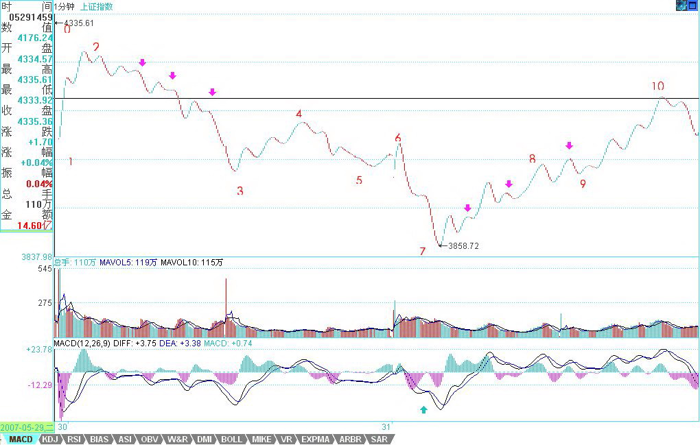

教你炒股票57：当下图解分析再示范
日期：(2007-05-31 22:35:44) 分类：[时政经济（缠中说禅经济学）]
部分由于管理层的夜半歌声，本周已经说了4天股票，本ID就来一个大满贯，再说一天，不过下不为例，天天说股票，一周说5天，各位不审美疲劳，本ID也烦了。
看到很多人还是发蒙，因此，就用这两天的1分钟图，继续说说怎样进行图解。当然，这些图解都是可以当下进行的。今天看回帖，好象有人希望本ID在什么QQ上即时发布什么提示之类的，这绝对不可以，QQ对于本ID来说只是用来419的，用来说股票也太浪费了，而且，本ID那4小时是天王老子都不能打扰的，说句不太客气的话，本ID的资金，大概比来这里所有人的资金之和都多，本ID忙着上QQ，出问题了谁负责？所以，最多就这样形式了，很多事情，还是要靠自己多练习，本ID最多就是一个陪练的。
必须要再次强调，不熟练的投资者，一定不能全仓进行操作，基本的仓位应该拿着中长线的股票，部分仓位可以用来练习，否则全仓操作，一旦来几次半生不熟的折腾，到时候连本都没了。而且一定要注意，卖点是在涨的时候出现的，不是追杀出来的，如果你砍了地板价，那一定不是在卖点上。只要是赚钱的，就没有卖错，宁愿卖早，不要卖晚。如果卖错了，就不看这股票，除非有新的买点。
还有，有人误解，认为本ID的方法就是拼命弄短线，这些人大概是跟孔男人学的中文，所以就这水平了。用本ID的方法，如果你选择年线级别操作，那比巴菲特还巴菲特，大概一个年线的买点后，至少到等几十年才有卖点，你就拿几十年吧，就怕你拿不住。还有，如果你是按周线级别操作，那这两年，至少指数上你根本没有卖点。至于按30分钟操作的，在一个30分钟第三买点后的中枢上移中，如果这上移是从10元开始，只要不形成新的30分钟中枢，那么就算到了100000元，你还是要拿着，为什么？没有卖点。所以那些说学了本ID理论就拿不住股票的，自己好好反思一下，究竟你学了什么？
闲话少说，看图解图。

对着图，首先要确定最小分析级别，也就是说，这级别以下的都可以看成是线段，而站在最小分析级别的角度，每一线段就是其次级别走势类型，三个线段重合部分就构成最小分析级别的中枢。
当然这些线段本身，可能都属于不同级别，这问题在前面已经说过了。例如本图，最小分析级别先规定为1分钟级别的，所以所有1分钟级别以下的，都是线段，在图上标记着数字，所有的[N，N+1]，都是线段。有人可能要问，01段是跳空缺口，23段上上下下，很复杂，怎么都是线段？因为这都不是1分钟的走势类型，里面没有1分钟的中枢，所以都是1分钟以下级别的，虽然缺口是最低级别的，当然比23段这种要低级别，但在1分钟级别显微镜下，没有区别，都可以看成是没有内部结构的线段。当然，如果你要考察23段的内部结构，也是可以的，但那就不是站在1分钟级别的基础上了。
由此可见，上图可以看成是10段线段构成的，线段中的波动，至少在分析1分钟级别的角度，就是可以忽略不计的。这里有一个地方是可能有疑问的，在23、78段5个带绿箭头指着的地方，似乎可以看成是一线段，但为什么没有？因为在这似乎是三段的结构中，第三段的都太微弱，把图形缩小后几乎就看不到了，对比一下89段带绿箭头的地方，这第三段就明显不同了，所以这是一个1分钟以下级别的上下上结构，而前面的不是。当然，如果你一定要说78段那箭头的地方很明显，那么78、89就合成一线段的上涨趋势了，这也可以，只是如果你是按这个标准的，那么所有和78段箭头位置微弱程度一样的，都要这样处理。本ID还是按图上的标记线段。
线段有了以后，一切都好分析了。当然，在当下时，例如在今早9点30分钟，是没有后面的线段的，但线段的标准，是一样的。你可以很精细地分析56段，是一个上下上的内部结构，其中下一段是跳空缺口，但无论如何，这就是一个线段。不过，由于前面12、23、34构成的中枢只有1分钟级别的，那么其构成第三类卖点的次级别就是1分钟以下级别的线段，这时候，就要考察一个有上下上结构的1分钟的次级别结构了，而56段显然符合这个结构，有明显的上下上，而45段也是符合1分钟次级别的要求的，注意，当考察1分钟的次级别时，就不能笼统地把所有1分钟以下的都看成1分钟的次级别了，因为这里的视点已经不同。显然，这个的45、56，就构成了标准的次级别离开中枢与反抽中枢，而这1分钟中枢的区间是[4087，4122]，而56段只到了4077，所以这就是第三类卖点了。
当然，在具体操作中，还可以特别精细地去分析这个问题，56段里的上下上，后上对前上的力度，从下面对应的MACD的柱子面积比就可以判断出不足来，因此这里就有很小级别的背驰，这都可以用当下分析的，当然，这样的精确度，需要操作者十分熟练并且反应与通道都十分快，并不要求每个人都有这个可能，这里只是进行分析，对大的级别，道理是一样的。
同样道理，67段里的内部结构下上下，后下力度也比前下弱，这从下面红箭头所指两绿柱子面积的对比就可以知道，所以这内部就有了背驰。注意，这67中的上，幅度上也很微弱，但时间比较长，是一个小的时间换空间的反弹，所以是可以看成一个上的，更重要的是，这上使得绿柱子回缩到0轴，这就更证明了这是一个不能忽视的有技术分析意义的反弹。
当行情走到6点时，34、45、56这三段，就可以看成是一个1分钟中枢了，当然，这种分法和原来[4087，4122]中枢的分解不同，但站在多义性的角度，这是绝对符合结合律的，当然是一个分解的方法。这分法，就使得23、67成为这中枢的一个震荡，从而可以用力度的方法来发现背驰。对于23、67下所有绿柱子面积之和，显然后者小，所以就知道，67只是针对[34、45、56]中枢的一个震荡，必然至少回抽中枢附近，而对67内部用区间套的方法进行精确定位，具体的看上一自然段的分析。按这种方法，7那买点的把握，就是很简单的事情了。注意，这都是可以当下分析的，根据当下的走势，自然就能把握。如果那7当成是第一类买点，那么9就是第二类买点了，这符合次级别上，次级别下，不创新低或盘整背驰的定义，对比一下2点和9点，一卖一买，都是第二类的。当然，在78里，其中的下也是一个第二类买点，但该买点的级别比9这点要低。
显然，这10个线段，已经组成了一个更高级别的5分钟中枢，结合方式如下：（12+23+34）+（45+56+67）+（78+89+910），该中枢的区间是[4015，4122]。这一点其实由6这个第三类卖点的存在以及后面的背驰，就可以知道，这中枢级别的扩展，是必然的。
注意，这是为了示范才分析1分钟的图，这类图是最复杂的，一般来说，级别越大的图越简单，而操作上，技术不好，通道不好的，一般不用1分钟的图，把级别放大点，这点必须明确。
附录：
今天的走势就是[4015，4122]的中枢震荡，至少指数是不难看明白的。周五出现这样的走势很正常，各种心怀鬼胎的到处散播这消息那消息，散户当然如惊弓之鸟了。但今天的走势，对今后是有利的。这次的问题并不在于国家公布了什么，而是其公布的手法，如此手法，必须得到严惩，一个最直接的压力必须让用这种恶劣手法的人承担：一个骂名。周五开始，舆论将逐渐转向，一轮新的反思将开始，注意，管理层也不是一言堂。还要注意一点，这两天同时公布的是财政部国债的发行，所以，经过这次风险教育，应该能分流些人去买国债了。
不过散户确实需要有点教育，前段时间，不是有人叫嚣散户已经统治市场了？但跌两天，散户就蔫了。大资金永远都是市场的中流砥柱，没有大资金，没有这几天的聚会，像这几天北京股的走势能出现？看那些企图限制大资金的政策还出不出？有些大资金，那些管理层换了几茬了，依然屹立不倒，不断壮大，这些脑子进水的政策，除了害散户，能害得了谁？周末，这样的局面，就让管理层去收烂摊子，如果他们还喜欢这边打压，后面又来救市的游戏，那就玩吧，这种游戏已经10几年了，真正的牛人，只会在这种游戏中越来越牛。
但对于散户，这几天确实心里压力大了点，但这其实也没什么，本ID前面反复提到这样的典故：96年连续3天指数跌停，后来还创出新高。所以，那天公布消息，本ID一大早7点不到就上来，告诉一定要在第二、三类卖点卖掉，没卖的，那就算了，到今天还卖什么？大反弹是必然有的，以后的位置一定比这个位置高，关键是该走的时候，就不要有幻想。
注意，那种杀已经跌了30%，去追买不跌反涨的所谓强势股，知道有补跌这种概念吗？在混乱的市场中，更应该专一。可以很理性地讨论这个问题，一个股票下跌40%，第一次反弹回20%，出一半或2/3，下来再买回来，在一次反弹上去，基本走的位置，就和没跌的时候差不多了，如果你现在有资金，在一股票下跌40%时补仓。这股票又不是什么被查庄股，那么，这种的操作基本风险很小，如果技术再好一点，看准一些买卖点，那么基本就等于高位走掉了。当然，以后再碰到这种情况，一定要在第二、三卖点出掉，那天，有多少人辜负了本ID7点不到就上来发帖子？
其实，纯技术上，现在的大走势并不坏，六月的调整没什么可说的，本ID那1/2线，现在也在4144点了，下面，这次上涨1/3的位置在3734点，这位置是第一支持位。没有特别的事情，这位置有很强支持。否则就要考验一半的位置，3434点。但至少现在，没有任何看到该位置的理由。
从短线上看，还是[4015，4122]的中枢震荡，有技术的，继续按这震荡操作。下周最大的机会，就是暴跌个股的大反弹，特别注意那些下跌到年线、半年线等关键位置的个股，这些反弹的力度会厉害点。
大浪淘沙，能从容面对本周情况的，是你投资生涯重要的一课，好好珍惜、体会。
周末，腐败去吧。